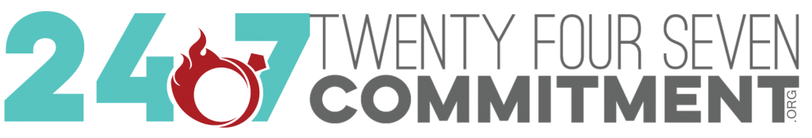

Explore Your Core Values
Kumpulan nilai yang kamu bisa pilih:
Adil Aktivisme Akuntabilitas Alam Ambisi Antusias Bebas Benar Berani Bijak Bimbingan Canggih Cinta Damai Dekat Efektivitas Efisiensi Finansial Gembira Gerakan Harga Diri Harmonis Hiburan Iba Iman Inspirasi Integritas Intelektual Introspeksi Jujur Kasih Sayang Kaya Keamanan Keluarga Kendali Kerja Sama Komitmen Kompetensi Kompetisi Kreatif Kredibilitas Kualitas Kuasa Lingkungan Hidup Loyalitas Mandiri Masyarakat Membantu Orang Merdeka Murni Musik Otonomi Pantas Patriot Pekerjaan Berarti Pelayanan Publik Pemimpin Pengakuan Pengaruh Pengetahuan Percaya Pertumbuhan Petualangan Prestasi Pribadi Ramah Reputasi Rohani Sahabat Sehat Semangat Seni Sesuai Stabilitas Status Sukarela Tanggung Jawab Tantangan Tegas Tekad Tekun Tenang Tenar Terbuka Uang Unggul Waktu Wawasan.
Pilihlah berbagai nilai yang tertera dalam kumpulan kata berikut, yang kamu pikirkan ataupun rasakan saat kamu sedang dalam keadaan paling bahagia, bangga, puas, atau tenang. Tambahkan yang lain jika perlu.
WAKTU, KOMITMEN
Tulislah kalimat atau paragraf yang mengandung nilai-nilai yang kamu pilih. Jelaskan mengapa nilai tersebut berarti bagimu.
Waktu Hal paling penting dibutuhkan manusia menurut saya, tanpa punya waktu apalah arti dari semua ilmu, harta, keluarga dan pekerjaan. Tanpa ada waktu yang tersisa, manalah mungkin ilmu kita akan berguna untuk sesama, karena punya ilmu tanpa berbagi bagaikan menggenggam bara api, hanya akan menyiksa karena menjaga sendirian tanpa kawan. Tanpa punya waktu yang berkualitas, apalah arti harta kita, kita hanya akan bekerja keras mengumpulkan harta tanpa bisa menikmatinya selain jerih-payah dan keringat yang kita dapat. Tanpa ada waktu yang berkualitas untuk keluarga, diri kita juga akan kurang bernilai buat keluarga, punya waktu bermain-main dan bercanda dengan anak-anak adalah hal yang sangat mahal akhir-akhir ini.
Komitmen Pada saat berjanji bisa menepati, baik itu janji ketemuan, deadline pekerjaan, ajakan kencan dan yang lainnya, saat itulah diri ini merasa menjadi orang paling bahagia, bangga, puas dan tenang. Ketika abai dengan janji ketemuan betapa merasa bersalah dengan kawan atau kolega yang kita ajak janjian. Ketika deadline pekerjaan bisa selesai tepat waktu, perasaan tenang, bangga dan puas akan lebih terasa daripada harus bekerja lebih keras karena tidak punya komitmen dengan pekerjaan. Karena sesungguhnya kebahagiaan itu kita yang ciptakan, dengan memegang erat komitmen kebahagiaan itu akan mudah kita dapatkan.
Ceritakan topik yang orang lain sering atau baru saja tanyakan atau minta saran kepadamu.
Curhat Masalah Keluarga
Topik yang sering diceritakan atau tempat curhat kawan-kawan saya biasanya masalah keluarga mereka. Baik itu masalah hubungan dengan pasangan maupun hubungan dengan anak-anak mereka. Mungkin ini resiko punya wajah tempat menerima curhat, hitung-hitung sebagai training sebelum punya keluarga beneran, kalau kata orang bijak, pengalaman adalah guru yang terbaik. Jadi ya tetap saya nikmatin apapun cerita kawan-kawan saya.